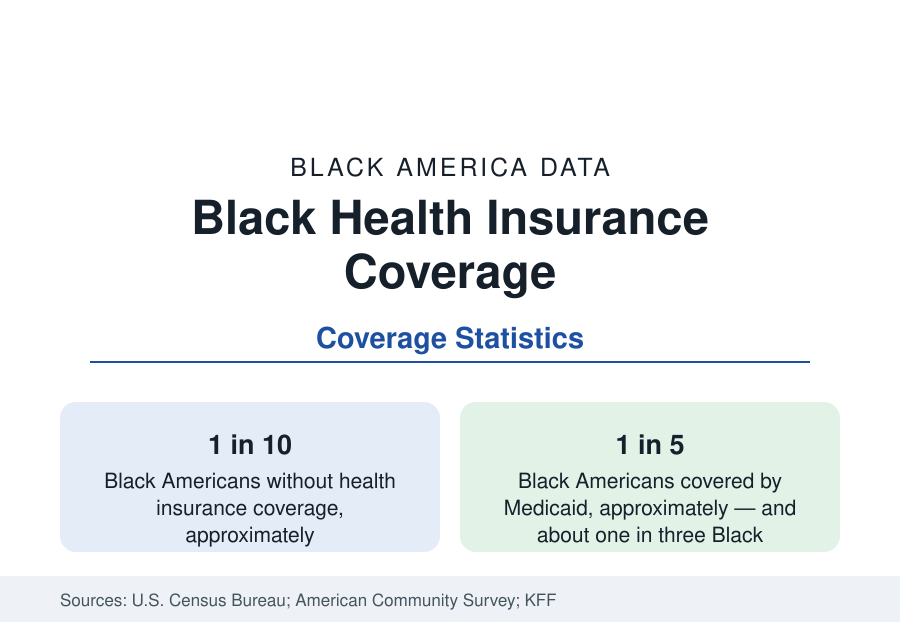

Black Public Health
Health Insurance Coverage Among Black Americans
About one in ten Black Americans is uninsured. Employer plans cover about half, and Medicaid covers roughly one in five — the coverage data behind every health statistic on this site.

Every outcome in this section of the reference is filtered through one prior variable: whether the patient is insured. About one in ten Black Americans — roughly 9 to 10 percent in the Census Bureau's annual coverage report — has no health insurance at all, a rate above the national figure and above the White rate. The rest of the population is covered through a characteristic mix: employer-sponsored plans for about half, Medicaid for roughly one in five, Medicare for most of the elderly, and smaller shares through military, veterans', and individually purchased plans. This article reports the coverage data and explains why it is the key that unlocks the rest of the health statistics.
How Coverage Is Counted
The Census Bureau's annual health insurance report, drawn from the Current Population Survey, classifies every resident by coverage during the previous year: private coverage, overwhelmingly through employers; public coverage through Medicaid, Medicare, and military programs; or uninsured for the entire year. The American Community Survey produces matching annual estimates with state and county detail. Rates in this article are for the full population unless stated; nonelderly rates run higher than the all-ages figures because Medicare covers nearly everyone past 65 — one reason the Black uninsured problem is concentrated among working-age adults, as the age breakdown below shows.
The Structure of Black Coverage
Employer-sponsored insurance is the largest single source, covering about half of Black Americans, through their own jobs or a family member's — a share below the White figure, reflecting the employment and occupational data of this reference: fewer Black workers in the large-firm, high-benefit sectors, more in service, temporary, and small-employer jobs where offers of coverage are thinner. Medicaid, the joint federal-state program for low-income residents, is the second pillar and the distinctive one: it covers roughly one in five Black Americans overall and about one in three Black children, making it the single most important insurer of Black childhood. Medicare covers Black seniors at near-universal rates, as it does all seniors, though supplemental coverage — the Medigap and retiree plans that fill Medicare's gaps — is held at lower rates.
The Uninsured
The uninsured tenth is not randomly distributed. It concentrates among working-age adults, among men more than women, among workers in part-time, service, and gig employment, and geographically in the states that have not expanded Medicaid under the Affordable Care Act — a list that overlaps heavily with the Black population map: Texas, Georgia, Florida, Mississippi, and Alabama among them. In those states, adults with incomes below the poverty line can fall into the coverage gap — earning too much for their state's traditional Medicaid, too little for subsidized marketplace plans. The state health profiles in this reference report coverage state by state, and the coverage gap's geography is one of the clearest policy fingerprints in American health data.
Coverage and the Outcome Data
The consequences of the coverage structure for the other articles in this section are direct, and the health-services research quantifies them. Uninsured adults are diagnosed later: cancers found at later stages, diabetes and hypertension discovered after complications rather than before them, prenatal care begun later in pregnancy. They receive fewer preventive services, fill fewer prescriptions, and use emergency departments as a substitute for primary care at higher rates. Insured status does not equalize outcomes — the control gaps in the hypertension and diabetes articles persist among the insured, reflecting differences in plan generosity, provider supply, and pharmacy access — but the coverage variable explains a substantial share of the raw outcome differences, and every outcome article in this section should be read with this one open beside it.
The Trend
The long series shows Black uninsurance falling substantially across the Affordable Care Act era — from roughly one in five Black Americans uninsured at the start of the 2010s to the current one in ten — the largest coverage gain of any group in the Census series, driven principally by Medicaid expansion in the states that adopted it and by subsidized marketplace coverage elsewhere. The trend has flattened in recent years, and the remaining uninsured are concentrated precisely where the policy map leaves gaps. Whether the rate resumes its fall or edges upward is, on the evidence of the series, a function of state policy choices more than of economics — which is why this reference tracks it annually, state by state.
Summarized: about half of Black Americans are covered through employers, about one in five through Medicaid, nearly all seniors through Medicare — and one in ten, concentrated in working ages and in non-expansion states, not covered at all. It is the first statistic of Black public health, because it conditions all the others.
More in Black Public Health
Hypertension Among Black Adults: Prevalence, Control, and Consequences
About 55 percent of Black adults have hypertension — the highest rate of any U.S. group. Prevalence, onset, control, and the stroke, heart, and kidney consequences in the data.
Diabetes Among Black Adults: Prevalence and Complications
Nearly one in five Black adults has diabetes, diagnosed or undiagnosed — and its complications fall with particular weight. The CDC data on prevalence, control, and outcomes.
Black Life Expectancy: The Gap at Birth and Its Causes
Black life expectancy at birth is about 73 years, roughly five years below the national figure — the summary measure of every health gap in this section. The CDC data.
Source: U.S. Census Bureau, Health Insurance Coverage in the United States (Current Population Survey); American Community Survey; KFF analysis of survey data.